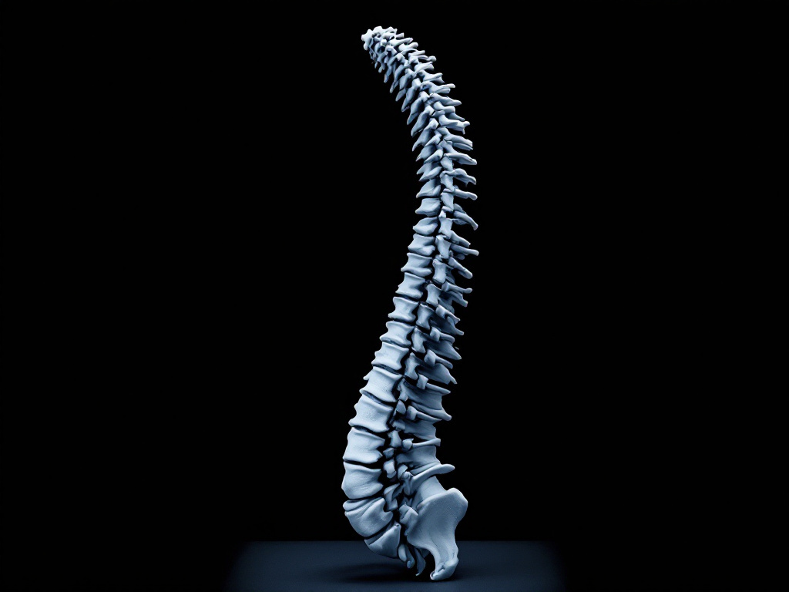

Conditions we treat after a collision
This page is general information, not medical advice. An examination is needed to know whether we can help you.
Eight injuries have their own page below. Each one tells you the same four things: what the injury is when a car causes it, how we examine it, how the care is paid for, and what gets written down for your claim. We are the San Rafael chiropractic practice for auto-accident injuries, and we work as a Pain Relief Clinic of Marin practice. You should be able to work out whether we are the right clinic for you before you speak to anybody here.
Jump to: Neck and head Back and disc Nerve and radiating pain
Why a condition page here is different
Every injury below is described as a collision injury. The mechanism is a crash, not a desk chair, not a mattress, not the way you sit at work. That is the whole reason this site exists separately from a general chiropractic site, and it is why you will not find a lifestyle-blame list on any of these pages. The other driver's insurer will make the argument that your own habits caused this. We are not going to make it for them.
Each page also answers the three questions a definition page never answers: what it costs to find out, why the days after the crash matter to your record, and what an examination actually produces on paper. A page that tells you what whiplash is and then tells you to call us has answered the one question you did not need answered.
Here is what we do not do. We do not diagnose you from a web page, and we do not tell you that any of this is certain to help you. An examination is how we find out whether we can help you.

The index. Nine pages, 01 to 09, none of them folded away
Pick the one that sounds like you. If none of them quite does, the crash hub triages it.
Neck and head
01 Whiplash
The neck injury a collision causes even at low speed, and often the one that felt like nothing at the scene. Symptoms commonly start a day or two later.
The first visit measures how far the neck moves, checks the nerves that run into your arms and hands, and records both.
02 Neck and upper back pain
Pain, stiffness, or numbness and tingling running into the shoulder, arm or hand since the impact.
The first visit tests the neck and the muscles between the shoulder blades, and screens the arms and hands, because that is where a neck injury usually declares itself.
03 Headaches and migraine
Headaches that started, or changed, after the collision, and that trace back to the neck.
The first visit takes the history against the crash, examines the upper neck, and records what was happening before the crash as well as after it.
Back and disc
04 Low back pain
The second most common complaint after a collision, and often blamed on something else because it arrived two days late.
The first visit tests movement, screens the nerves that run down the legs, and writes down what is measured rather than what hurts.
05 Slipped or herniated disc
When somebody has already used the words "slipped disc", or when the pain travels rather than staying in one place.
The first visit works out whether a disc is actually involved, because a disc pattern and a joint pattern are managed differently.
06 Shoulder pain
The seat belt across the collarbone and the braced arm on the wheel are the two mechanisms a crash produces.
The first visit examines the shoulder and the neck, because a good share of shoulder pain after a collision is coming from the neck.
Nerve and radiating pain
07 Sciatica
Pain that starts in the low back or buttock and travels down one leg since the crash.
The first visit locates the level it is coming from and records the distribution while it is recent.
08 Pinched nerve
Numbness, tingling or a shooting pain down one arm or leg.
A compressed nerve is examined, not guessed at, and an intermittent symptom is worth getting on the record while you can still describe it.
09 Work injuries
Work injuries are handled too, on their own page.
What we can and cannot say about results
We publish no recovery rates and no success percentages, because we do not have data we could show you. Nobody should trust a percentage on a chiropractic website that has no source under it, and we would rather say that plainly than invent one.
The page this hub replaces advertised four conditions that had no page behind them at all, including one that this practice should never have been advertising. When the owner reviewed those tiles in 2026, the decision was to drop all of them. The same review took out the sweeping health claims that used to sit on the pages below. What is left is a description of what we examine and what we find.
Results are not guaranteed and may vary from person to person. Individual results vary.
These reviews describe one patient's experience and are not a prediction of your outcome.
How care is paid for
Whichever injury brought you here, the money question is the same one, and it is answered in one place rather than scattered across nine pages: what the routes are, which one applies to you, and what happens if the claim does not work out.
Before we examine you, you get the price in writing.
You were just in a crash
If the collision was recent, timing matters more to you than a condition definition does. The gap between the crash and your first examination is a gap in your medical record, and the record is what the claim rests on. That is an argument about your paperwork. It is not a statement about scheduling.
We will tell you what care would cost before we examine you.
See how liens work Request a consultation